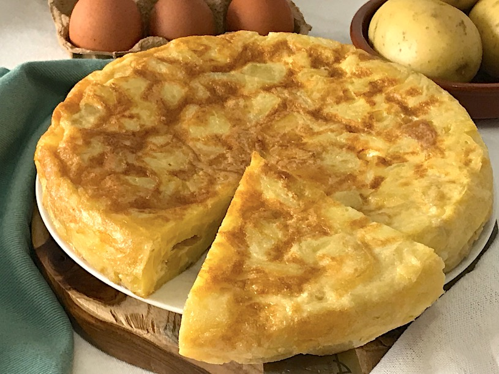

Receta de Tortilla de patatas.
Fuente:
Tortilla

Lista de ingredientes:
- 5/6 Huevos grandes
- 560 gramos de Patatas
- 150 ml de Aceite de oliva
- Sal, al gusto de cada uno
Pasos para hacer una Tortilla
- Cortar las patatas. Cortamos las patatas en mitades y estas a su vez en rodajas de medio centímetro de grosor.
Si os gusta otra forma o grosor, solo tenéis que hacerlo a vuestra manera. Lo importante de este paso es cortarlas más o menos iguales.
- Mezclar los huevos y las patatas.
- Hacer la tortilla. Cojemos una sartén y le echamos un chorro de aceite. Calentamos a fuego medio y esperamos a que esté caliente.
Una vez esté caliente, vertimos la mezcla, y lo dejamos 5-10 minutos. Ahora viene lo difícil. Darle la vuelta a la tortilla
(recomiendo con un plato) y hacer la otra parte y ya estaría.
- Servir a gusto del consumidor.
Hecho por: Sergio Pardo Gázquez